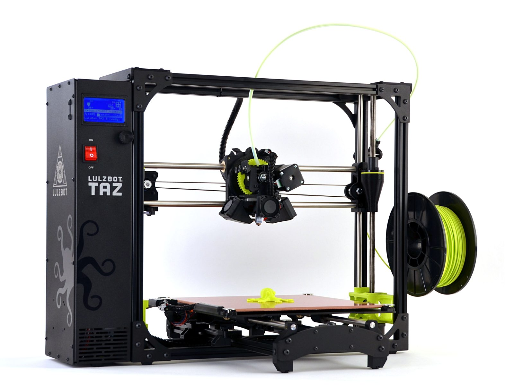

A skill for Claude
Wire harness drawings from one description.
Tell Claude what the harness connects and how long each branch runs. It writes the package a shop builds and inspects from: the harness drawing, bill of materials, wire list with cut lengths, connector tables, a wiring diagram, and a report of everything it checked.
A harness off a real machine.
LulzBot publishes the drawings for every harness in its TAZ 6 printer. This is the one that runs the Y and both Z motors: a 16-way plug at the control box and three shielded cables, tied along the frame’s lower rear rail to the Z motor at the foot of each upright and to the Y motor at the back of the bed.

Control box,16-way plug P1 J1 · Z left motor J2 · Y motor, behind the bed J3 · Z right motor
From the route, the generator cuts the three cables to , and mm, the lengths on LulzBot’s drawing, with mm of jacket stripped at each end. A test reads LulzBot’s own drawing file and holds the package to it: every length, strip, pin, colour and part. Redrawn from LulzBot drawing EL-HR0091 (© Aleph Objects, Inc., CC BY-SA 4.0); the redrawing is under the same licence.
One source. Every sheet.
The harness is a short YAML file: connectors, wires, and the length of each branch. Every sheet, table and CSV is generated from it, so the drawing and the wire list cannot disagree. Change a branch length and every cut length through it changes with it.


W1 is cut to mm: the branches it runs through, plus any service and termination allowance the source states, rounded up. The package also carries the wiring diagram (drawn by WireViz), CSVs for purchasing and the cutting bench, a PDF of every sheet, and the model the 3D view on this page reads.
It checks before it draws.
Every pin a wire lands on exists, every gauge suits its contact, and the wiring agrees with a netlist stated separately in the source, so a mistake has to be made twice to get through. Lengths, tolerances, part numbers and the drawing’s fit on its sheet are checked too. An error stops release: the generator exits non-zero and every sheet is stamped NOT FOR RELEASE.

A cable is one item.
A multi-conductor cable is bought, cut and drawn as one thing. Its conductors are named within it, W5-RD, W5-BK and so on. The cable gets one cut length; each conductor gets a lead at each end.
- Cut W5 to
- mm
- Jacket runs
- mm
- Strip back at P1
- mm
- Strip back at the split
- mm
- Leads to J2
- mm
- Leads to J3
- mm
Pinouts as the connector really is.
An XLR’s three contacts are neither numbered in order round the face nor evenly spaced, and a female face is the mirror of a male one. The source states each contact’s position from the datasheet, and every pinout, on the drawing and in the 3D view, puts each numbered contact exactly there, seen from the side it names.
Checked against the parts
The tests read Neutrik’s XLR and a 9-way D-sub’s footprints from the KiCad library and require every pinout to be those contacts, numbered the same, scaled evenly, never turned or mirrored.
Say what isn’t known yet.
Drawings start before every part is chosen. A length can be a minimum or TBD, a colour can be TBD, and a connector can be just a pin count and a shape. The package shows each as open, carries it into every cut length it touches, and keeps going.

An automatic layout, or your own route in 2D or 3D.
Give no coordinates and the generator lays the harness out flat and not to scale: the farthest-reaching run is the trunk, branches alternate either side, and a crowded harness is drawn tighter until it fits its sheet. Give every node a position in 2D, with bends where a branch goes round something, and sheet 1 is that route at a standard scale. Give positions in 3D, as the TAZ 6 harness does, and sheet 1 is its plan view while the 3D view shows the route in space.


Install
Then ask Claude for a harness drawing and describe the harness, or hand it a sketch, a spreadsheet or a netlist. It looks up the connector datasheets, writes the YAML, and fixes every error the checks find before it draws.
Claude Code
In a terminal, with Claude Code 2.1.292 or later:
claude plugin install wire-harness-drawing --marketplace jneuhaus20/wire-harness-drawingThat installs it for the terminal, the desktop app’s Code tab and VS Code alike. Or, in the desktop app, open Customize › Plugins › Add › Add marketplace, enter jneuhaus20/wire-harness-drawing, then add Wire harness drawing to this computer.
New releases arrive on their own once auto-update is on: in a claude session, /plugin › Marketplaces › wire-harness-drawing.
Claude apps and claude.ai
Download the skill zip from the latest release. In Customize › Skills, choose + › Create skill › Upload a skill, and upload the zip.
Skills need code execution, under Settings › Capabilities. Upload each new release to update.
The generator on its own
Python 3.10 or later and PyYAML. WireViz and Graphviz add the wiring diagram; cairosvg and pypdf add the PDF.
python3 scripts/harnessgen.py harness.yamlWhere it stops
- Sheet 1 is one A3 sheet. A crowded harness is drawn tighter to fit it; one too big even then is reported, and is best split into sub-harnesses joined at an in-line connector.
- A cable’s shield is drawn on the cable and its drain wire listed as a conductor. Overbraid termination goes in the notes.
- Routed drawings are to a standard scale, not a full-size formboard print.
- The drawing follows common practice for harness drawings and IPC/WHMA-A-620 workmanship classes. Your shop’s own drawing standard still governs.